Experience

Agentic AI Platform
Scaffolding AI
New product announced at Intuit Investor Day 2025. Pitched the original idea, defined market requirements, and initiated development for AI agents that run your small business with an AI control panel. Our product turns SOPs (Standard Operating Procedures) into agentic work.
Projected $1B+ ARR opportunity, directly advancing Intuit's "done for you" platform strategy. Created a system of SLMs (Small Language Models) to optimize token usage and narrow business knowledge domains. Integrated neuro-symbolic reasoning and LLM-as-a-Judge for system reliability, securing immediate pilot adoption across three internal teams.
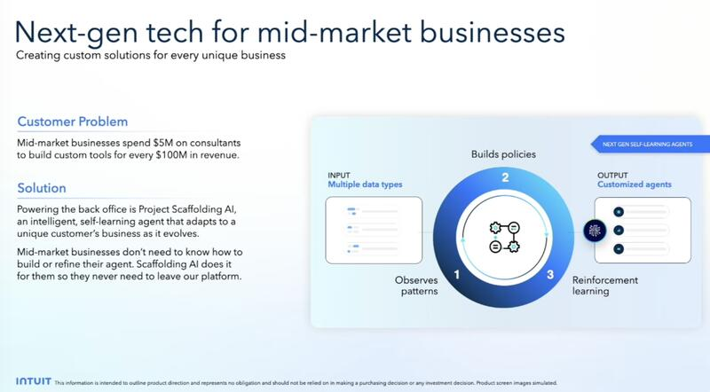
AI Agents in Production
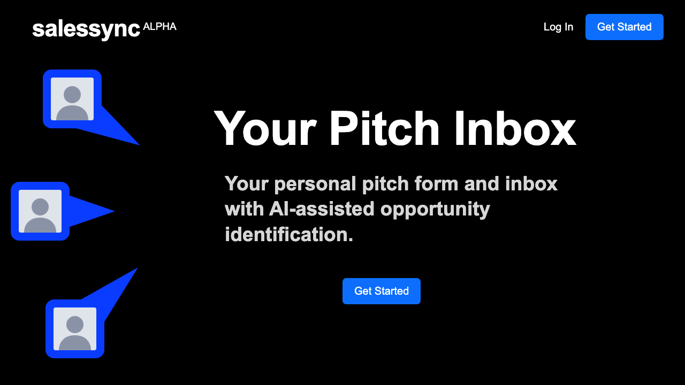
Mobile Performance Score
Industry First Zero-to-OneLabs team launched the first Mobile Performance Score (MPS) -a "credit score" for mobile apps measuring Acquisition, Engagement, Monetization, and Sentiment in a single composite score. Drove upsell and analyst adoption across the platform.
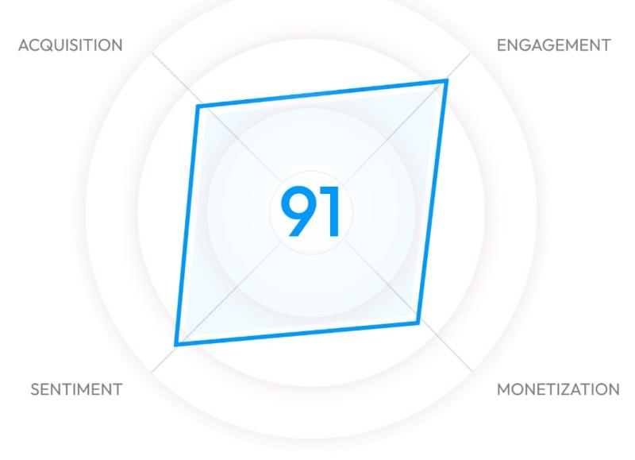
AI & GenAI Products
Data & Analytics Products
Data Infrastructure & Privacy
Developer Relations & API
MessagePath
Zero-to-OneBusiness-focused AI writing co-pilot. B2B SaaS AI writing coach for sales and support teams. Scored and improved business writing using NLP analysis. Described as what you'd get if "Grammarly and Hemingway App had a business-focused baby."
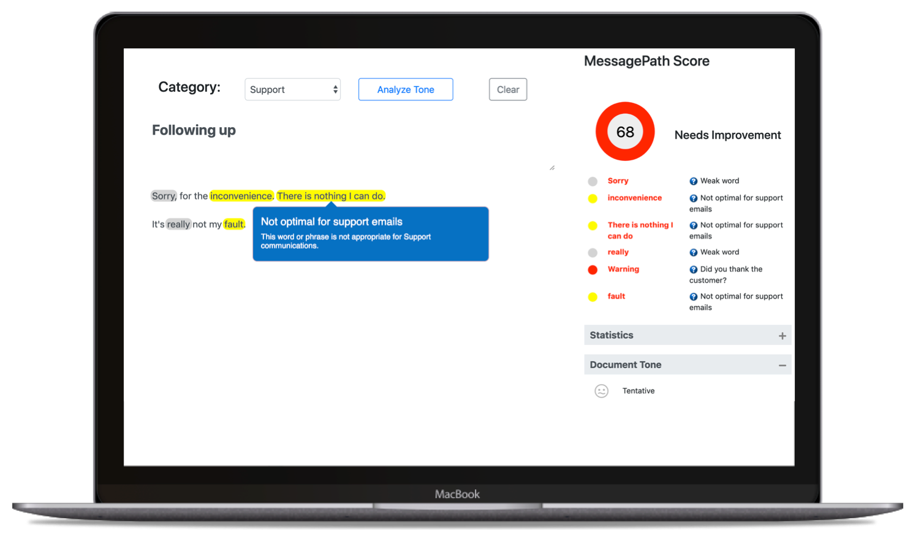
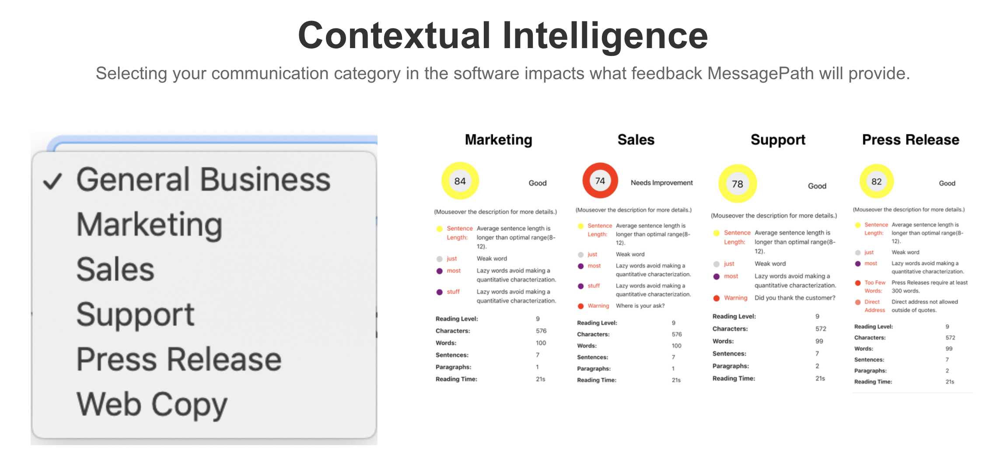
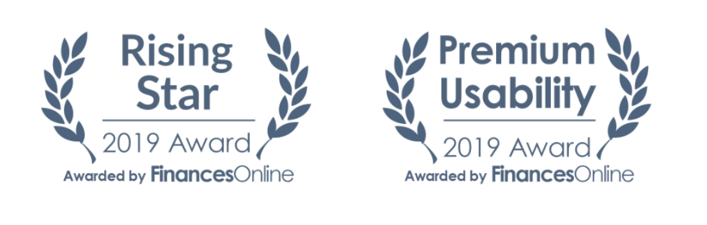
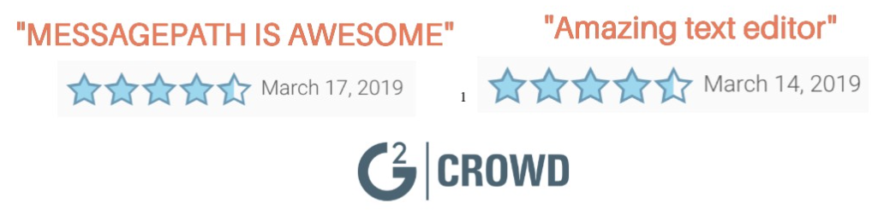
Talla AI Knowledge Bot
Zero-to-OneHead of product for one of the first commercial B2B AI agent platforms. Enterprise AI chatbot agent supporting knowledge management for HR, sales, and support teams. Featured analytics dashboards, knowledge gap detection, intelligent content tagging, and an early vision for AI agentic workflows. Directed the product through its first 2,000 users while working closely with data science to experiment with and plan NLP technology paths.
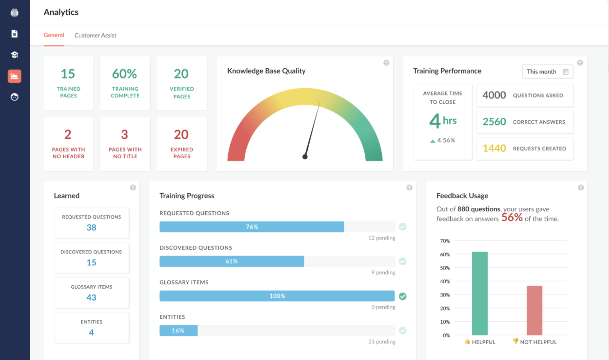
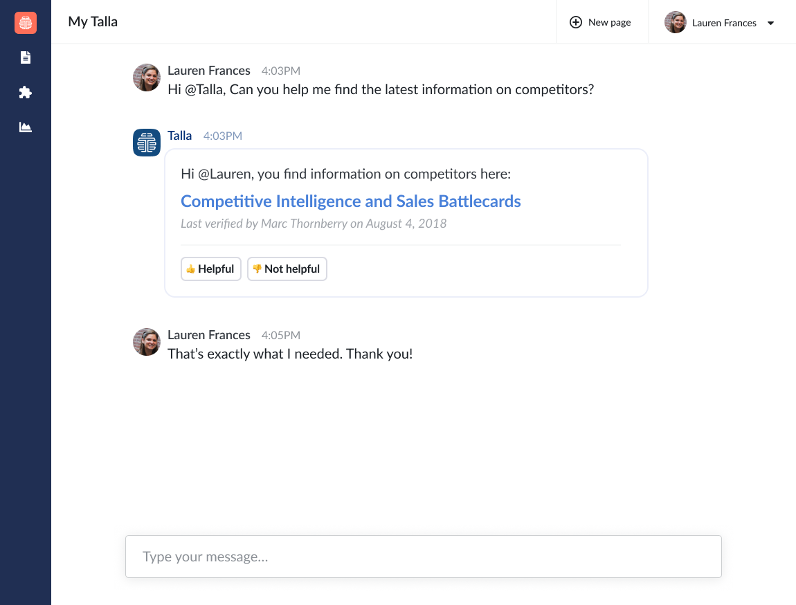
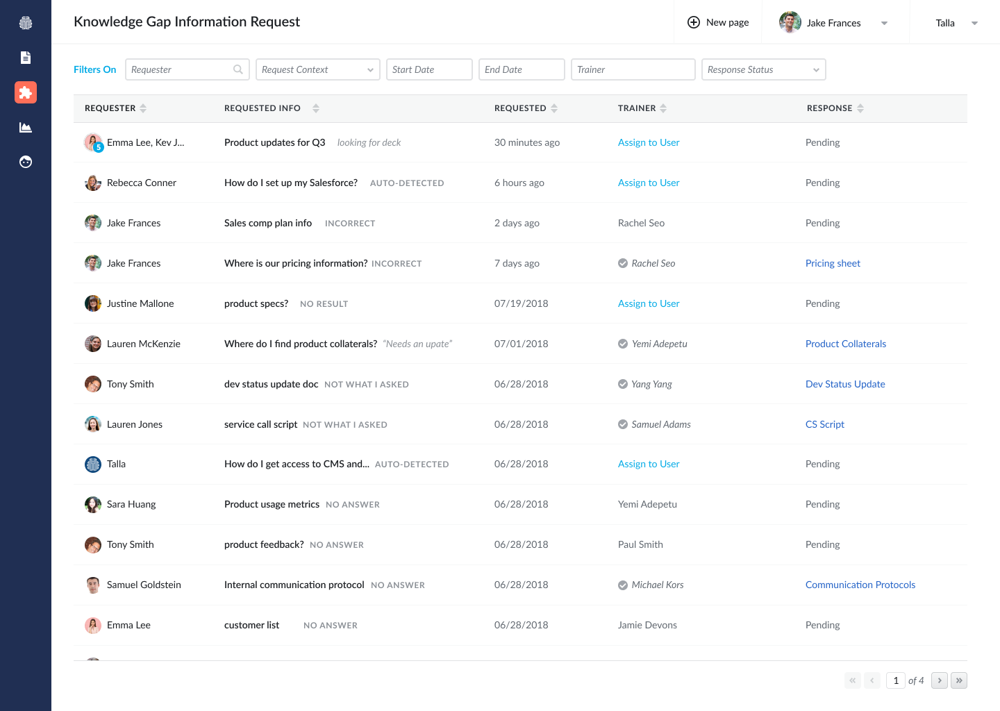
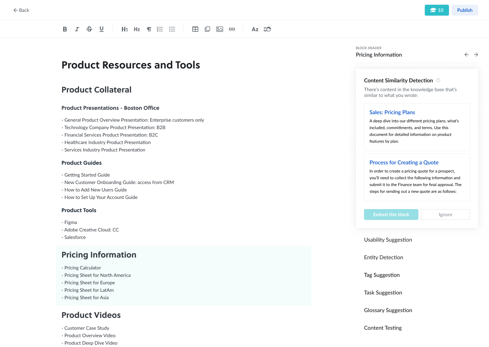
SenseAware, Co-Founder
Industry First Zero-to-OneLaunched the first integrated remote-sensor IoT platform at FedEx. Global SaaS IoT platform for real-time shipment tracking with sensor data -temperature, light exposure, location, and barometric pressure. Used for vaccine distribution, pharmaceuticals, and high-value logistics worldwide.
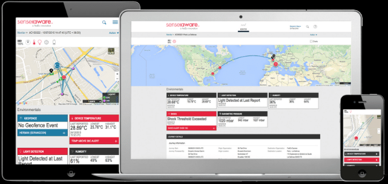